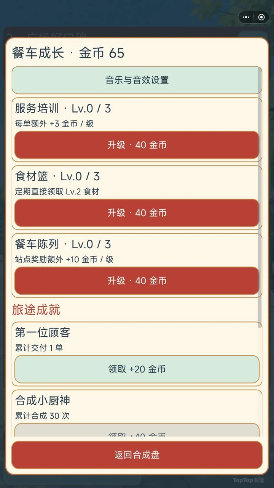
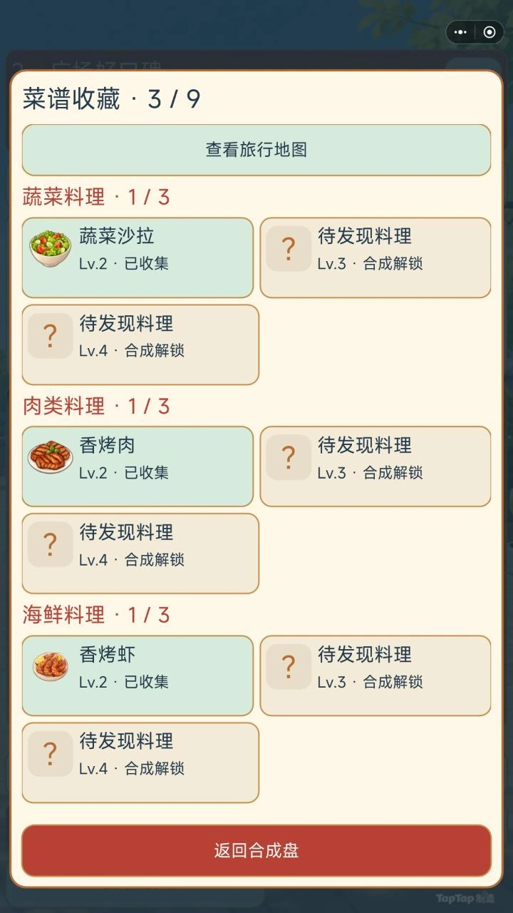

从表格式棋盘变成餐桌
新版把合成盘表现为木质餐桌，顾客位于桌后，订单显示在头顶气泡。食材、料理和人物在同一画面里建立对应关系，减少在多个区域间寻找信息。
TAPTAP MAKER / 个人 AI 游戏实践
合成料理 / 轻经营 / 旅行收集
开餐车领取食材，合成九道料理，完成顾客的单品与组合订单。收入用于扩容、升级和旅行，按自己的节奏经营六个美食站点。

TapTap 公开测试 · 2026.10.25 核对
GAMEPLAY / 核心体验
免费领取蔬菜、肉类与海鲜，移动、交换或合成食材，再按订单交付。第二站开始加入双料理订单；服务培训、食材篮和餐车陈列各有三级成长。餐桌可从12格扩至16格，六站通关后可继续自由经营。
TAPTAP GALLERY / 游戏展示图
以下来自 2026.10.25 核对的 TapTap 公开游戏页展示图；保留原图，部分含商店宣传文案，不冒充本次重新运行游戏的实机录制。
点击任意截图可查看原图。 多张画面可左右滑动，也可聚焦图库后使用方向键浏览。


DESIGN / 规则与取舍
新版把合成盘表现为木质餐桌，顾客位于桌后，订单显示在头顶气泡。食材、料理和人物在同一画面里建立对应关系，减少在多个区域间寻找信息。
餐桌从 12 格扩展到 16 格，通过抹布擦除污渍逐步开放位置。整理操作支持立即撤销，让腾挪食材保留试错空间。
第二站起加入双料理订单与站点特色奖励。六站推进门槛累计需要完成 32 单，通关后可以自由经营；这些门槛不等于只有 32 条固定订单。
三类升级各有三级，菜谱收藏、旅行进度和四项成就分别记录短期与长期目标。成长页面把升级成本、当前效果与下一步放在一起，支持玩家安排收入。
MY PRACTICE / 项目推进
将原 Unity 餐车项目适配到 TapTap Maker，围绕合成、订单、经营成长和旅行推进整理系统闭环。通过 AI 协作迭代横屏到竖屏的布局，明确顾客气泡、无框摆菜、清理扩容、大图入口与多种屏幕比例下的阅读要求；两个 Maker 工程在作品集中合为一款。
TAPTAP / 游戏入口
试玩入口与当前可玩版本以 TapTap 游戏页为准；公开介绍中的功能和数量属于开发者在平台展示的信息。